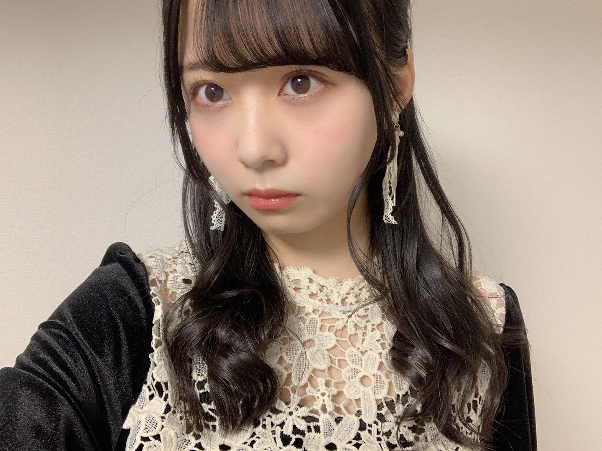
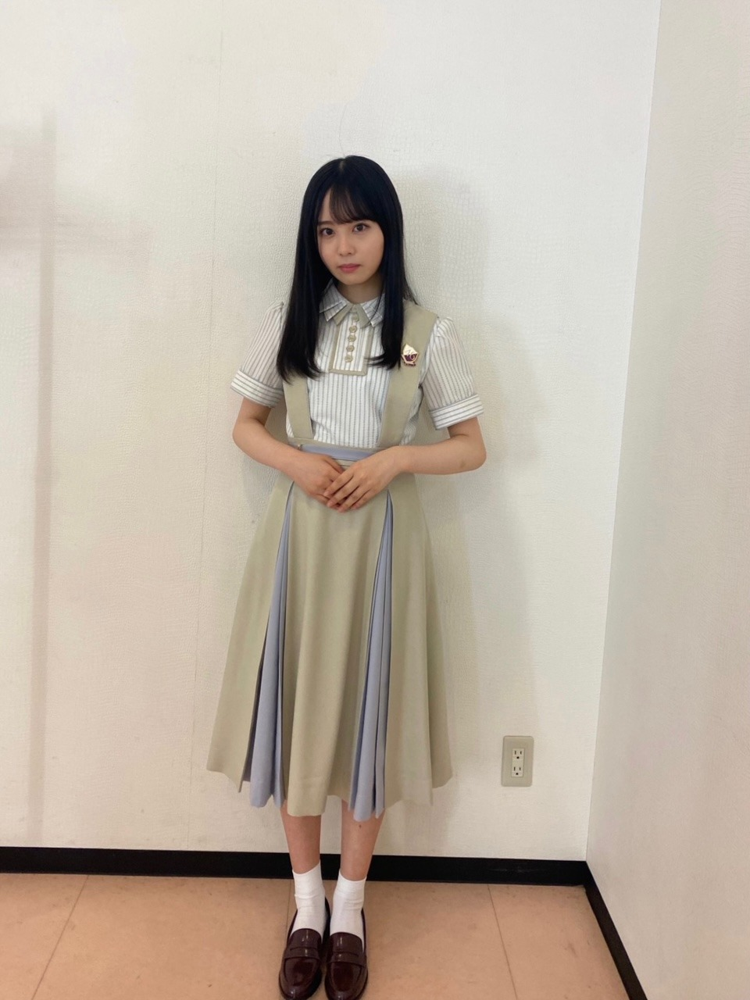

2020/1109Mon冬にまた。佐藤璃果
こんにちは~
乃木坂46 (新)4期生 岩手県出身
佐藤璃果です。

♡ベロアのワンピース♡
違う髪型ver.もあるのでまたいつか！
昨晩は、
｢らじらー！サンデー｣さん
初登場でした！ありがとうございました。
生放送も初めてですし、
乃木坂の先輩方以外とラジオで
トークをさせて頂くのも初めてでした。
お聞き苦しいところもあったかと思います。
吉村さんが言ってくださった
｢台本なんて見なくていいから！｣という言葉に救われました。
私は結構決められたことを全うしてしまう所があって、それで頭がいっぱいになるので、そう言っていただけて、少し余裕を持ってお話することが出来ました。
藤森さんの何を言っても受け止めてくださる優しさに救われました。
これを言ってもなんでも返して下さるんだろうなという安心感が本当に有難かったです。
緊張しましたが
いい経験になったかと思います( *´꒳`*)
聞いて下さった皆様、
関わってくださった皆様、
ありがとうございました。
全部はご紹介出来ませんでしたが、
沢山沢山、色々考えてメールを送ってくださってありがとうございました。
本番ギリギリまで大園さんのらじらー！を聞かせて頂いていて、あの優しい空気感を作って下さったから話す事が出来ました。
大園さんが気付いていないだけで、私は大園さんの優しさに救われている事あるんですよ！
鈴木さんに｢めんこいですねぇ！！！｣
と話し掛けようと思いました。
お会いしたら美しすぎて、
お疲れ様です。しか言えませんでした。
ううう。(´._.`)
❁
んだりか！！！
喋りか、黙りか、無理か
りか三段活用。
これから使っていきたいなぁと思います！
よろしくお願いします︎︎☺︎
~~~~~~~~~~~~~~~~~~
〇ananさん、11月4日 発売
乃木坂46全員登場回です。
待ち時間の編集部の方との
お話も楽しかったですし、
メイクさんに色々聞けたのも嬉しかったです！勉強になりました。
髪をふわふわにしてもらったことがポイントです。私も誌面を拝見させていただくのが楽しみです。
新4期生の企画は大盛り上がりで、新たな
一面をお互いに知れたいい機会でした。
ありがとうございました。

ドット柄可愛いですね
~~~~~~~~~~~~~~~~~~~
4期生単独ライブが無観客という形で
させて頂けることになりました。
16人で初めての4期生ライブです。
ものすごく緊張しています。
この話を聞いた時は鳥肌が立ちました。
無観客でも、見ていて下さる方を
元気にしたい、笑顔にしたいという気持ちは変わりません。
未だ前のような日常とは違う日々を
懸命に過ごす皆さんに、
このライブで皆さんに沢山の明るい感情を
届けられたらと思います。
誠心誠意頑張って参ります。
よろしくお願いします。
~~~質問~~~
〇雪だるま作りと雪合戦どっちが好きですか
雪だるまです⛄️
〇璃果ちゃんが今ハマってる曲はありますか??
最近またSEKAI NO OWARIさん
を沢山聞いています！
｢silent｣｢プレゼント｣などなど、、
あとはeillさん
｢踊らせないで｣｢片っぽ｣｢SPOTLIGHT｣
あとは緑黄色社会さんの
｢Mela!｣
〇璃果ちゃんが一番好きな髪型はなんですか??
結んだり、編み込みだったり、、
なんでも好き
〇ハロウィンは何をしましたか？
何もしてないんです...
皆さんのハロウィンエピソード
分けて欲しいです、、。
〇今度、仙台方面に2泊3日の日程で旅行行くのですが、東北出身の璃果ちゃんからオススメの場所や行った方がいい場所あれば教えてもらいたいです！よろしくお願いします。
仙台のひょうたん揚げがとても美味しいです！ぜひ食べてみてください~。
〇堀さんのインスタで新制服になったことを知ったのですが、璃果ちゃんは襟タイプと大きいリボンのタイプのどちらですか？
堀さんも、皆さんも本当に似合っていて素敵ですよね...。
私は、襟タイプです！

長袖の部分がないバージョン。
これからまた沢山制服の写真を載せられたらいいなぁと思います！
☆アホ毛が1本だけ飛び出ているのがポイントです！
〇いつもおうちではどのように焼き芋を作っていますか？
私のレンジは焼き芋モードがあるので、焼き芋モードで柔らかさがでるまで焼いています！
本当は炊飯器でやると美味しいらしいのですが、炊飯器を持っておらず...。
地元にいる時は、
キッチンペーパーを水で少し濡らして、
それでお芋を包んで、
サランラップにまたそれを包んで、
温めていました！
弱火でじっくり温めがオススメです！
~~~~~~~~~~~~~~~~~~~
〇10月31日、金川沙耶ちゃん
❁お誕生日おめでとう❁
優しくてオシャレで、ダンスもカッコよくて、笑顔がとっても素敵な、
さやんちゃんが大好きです♡
最近沢山話せるようになって、
写真を撮ったりと、幸せです！
今はとても、優しいお姉さん！という感じだし、さやんちゃんも、
同い年に見えなーい！って言ってくれてて！
んふふふ。
同い年同士、これからもよろしくね！
ご飯、ショッピング
いつか行けるの楽しみだあ♡
最近お互い付けあったあだ名で呼び合うの
とても好きです！
素敵な1年になりますように。
〇11月1日、渡辺みり愛さん、
❁お誕生日おめでとうございます❁
新4期生みんなが言っている通り、
白石さんの卒業コンサートにて、新4期生のところに来て教えて下さったり、
有難いお言葉を掛けて頂いたこと、
私もすごく記憶に残っています。
沢山教えて頂き、ありがとうございました。
みり愛さんの白いお肌が
本当にすごいなって思っています。
もっと色々なお話をしていければと思います。
素敵な1年になりますように。
~~~~~~~~~~~~~~~~~~~
明日はるなぴです。
外ハネ可愛いね！似合ってる❣️
~~~~~~~~~~~~~~~~~~
皆さんにとって
素敵な1日になりますように。

またね。
ブログも頑張るね。
いつもコメントや、ライブについての感想、雑誌の感想、ありがとうございます。
#40 りか
コメント(313)
雪見だいふくは好きですか？
ラジオお疲れ様！とっても良かったよ！！次回も出たら楽しみにしているよ。
ananの写真も良かったよ。これから幅が広がることを願っているよ。
ー質問ー
・写真集を発売するならどこで撮影したい？
・気晴らしではよく何をする？
・乾燥肌に悩んでいるけど、良い対策はあるかな？
・質問というかお願い！メガネをかけた姿も見てみたいな！
ありがとう！次回も楽しみにしているよ。
らじらー聞きました〜！
なんかりかちゃんノリノリで楽しそうにやってて、聞いてる側も楽しめました(笑)
りかちゃんの声ってほんとに可愛いなぁって改めて感じられたよ(笑)
んだりかちゃんってなんか思ってるよりも響き良くて色んな人に浸透していきそうw
4期生ライブおめでとう！！
多分1回中止になっちゃった分悲しい思いとか色んな気持ちを込めてりかちゃんは楽しんでやってくれるだろうなぁって期待してます！！
リハだったり、振り入れだったりこの期間大変だと思うけど頑張ってね！！！
応援しまくってます！！！
質問
・踊ってみて大変だった曲とかありますか？
・家にこたつはありましたか〜？(東北だと出れなくなりそう)
・りかちゃんが今アイドルなんだなぁって感じる瞬間はありますか？
・これから仲良くなりたい！って思ってるメンバー(先輩とかも含め)はいますか？
・りかちゃんはアニメとか映画とか何か好きなキャラクターはいますか？
5日後をまた楽しみに待ってるね！
メリアより。
ワンピースめっちゃ似合ってます。
らじらーまだ聞けてなくてすみません。
絶対聞きます。
楽しかったですか？
4期生単独ライブ！
すごいです！応援しています！
僕もハロウィン何もできてないので
同じですね。
新制服が今までと違う感じがして
とても新鮮です！
アホ毛確認しました！笑
ブログ楽しんでます！
リレーめっちゃ続いててすごい！笑
ノギスキも楽しみにしてます！
またね。
新制服すごく似合っててかわいい(⑉• •⑉)❤︎
ハロウィンの思い出じゃないけど、私の秋冬の恒例行事は三角チョコパイを食べることです！
りかちゃんは食べた事ありますか？？もしくはもう食べましたか？？
ライブ楽しみにしてるよー！！♡
喋りか、黙りか、無理か
瑠奈ちゃんみたい〜
覚えやすい
らじらー聴きましたよ～！！！！
ラジオに生出演するのが初めてとは思えないくらいお話が上手ですごすぎました
吉村さんを呼び捨てしてすぐ謝るところめちゃくちゃ面白かったです!笑
｢んだりかちゃん｣呼びもすごく可愛いですよね
終始お声が天使すぎて癒されたのですが、藤森さんがラップをするコーナーでの璃果ちゃんがほんっとに可愛くてやばかったです。｢んだんだんだ〜！！｣も大好きだし｢だまりか！｣も超絶可愛かったです。
本当に素敵な時間をありがとうございました...！！
-----------------------------
4期生ライブおめでとうございます！
パフォーマンスしてる璃果ちゃんをたくさん見れるのが楽しみで仕方ないです。絶対見ますね！！！
-----------------------------
質問答えてくれてありがとう
璃果ちゃんは襟タイプなんですね！
すっごく似合ってて素敵です...！！
これまでの制服も全部好きだけど、今回のデザインは新鮮だしめちゃくちゃ可愛くて大好きです！！
また乃木中とかで見れるのを楽しみにしてますね
-----------------------------
質問をさせていただきます↓
・最近始めたことor始めてみたいことって何かありますか？
・どうすれば璃果ちゃんみたいにおしゃれになれますか？
・璃果ちゃんは言葉遣いまで美しいなといつも思うのですが、心がけていることなどはありますか？
ぜひ聞かせてください！
-----------------------------
昨日紅葉を見てきたのですが、真っ赤に染まっている子もいれば緑から移り変わっている途中の子たちもいて、色合いが本当に綺麗でした。
木とか花って見てるとすごく癒されますよね...
璃果ちゃんはもう紅葉見れましたか？
-----------------------------
次回のブログも楽しみに待ってます！
大好きです！！
あきひろ
ブログ更新ありがとう！
4期生ライブが発表されましたね！
会場で応援することはできないけれど、岩手から思いを届けます！楽しんで、頑張ってください！
焼き芋の作り方、教えてくれてありがとう！
焼き芋モードがあるんですね、うらやましいです。
炊飯器のやり方、調べて実践してみようと思います！
上手くできたら報告しますね！
あと、昨日の乃木中で紹介されていた、焼き芋専門店ふじ。
すごく興味が湧きました。今度行ってみたいです！
anan、可愛かったです！
とても仲良しなのが伝わってきて、こちらも楽しかったです！
またの更新、楽しみにしてます！またね！
お洋服、璃果ちゃんに似合っていてとても可愛いです♡
どちらのお洋服でしょうか ？♡
ぜひお揃いにしたいです （ ♡ ）
ベロアのワンピースの写真めっちゃ可愛いです〜 イヤリングのレースみたいなのもめっちゃいいですね！
anan読みました〜
4期生ライブ絶対見ますね！！受験の活力にします！今からめちゃめちゃ楽しみにしてます！
セカオワ僕も大好きなので嬉しいです〜 僕がセカオワで1番好きなのは「Fight Music」と「不死鳥」です！
新制服めっちゃ似合ってますね！襟の重なってるとことかスカートの水色のとことか可愛い！
~質問~
〇漫画とか小説とか最近何か読んでますか？？
〇勝負事や大事な時って何か願掛けやルーティンなどはあったりしますか？？
今週に受験なので頑張ってきます！勝手ながら結果報告させていただきます！笑
4期生ライブのお知らせを見た時からずっとワクワクしてるので早く12/6になるのが楽しみです！
次の更新も楽しみにしています！応援してます！！
良い1週間を！！
りかた〜ん♪
ベロアのワンピース可愛い！！！♡
せっかくワンピース着てるなら
全身で見たいなぁ！
下がどうなってるか気になる！⸜(* ॑꒳ ॑* )⸝
この髪型はハーフアップだね！
髪巻いてるの可愛すぎる~
違うバージョン楽しみにしてる(* ॑ ॑* )♡
璃果ちゃんは癖っ毛？元からまっすぐ？？
┈┈┈┈┈┈┈ ❁ ❁ ❁ ┈┈┈┈┈┈┈┈
らじらー！サンデー聴いたよ~！
久しぶりに璃果ちゃんの声聴いたかも！
聴けてよかった(*´˘`*)
ラジオの生放送って絶対緊張するよね((((>_<))))
前に出てたのぎののは収録だけど
らじらー！は生放送だもんね、、、
でも周りの人のおかげで少しでもリラックス
できてたならよかった！☺︎
また次いつか出られたら
今度はもっと楽しめるといいね(*ˊˋ*)
璃果ちゃんの声たくさん聴きたいなぁ！
┈┈┈┈┈┈┈ ❁ ❁ ❁ ┈┈┈┈┈┈┈┈
りか三段活用覚えたっ！
喋りか、黙りか、無理か
無理かって諦めちゃうところも可愛い(*´`)♡
"頑張りか"もいい感じだから
勝手に追加しとくね~！笑
┈┈┈┈┈┈┈ ❁ ❁ ❁ ┈┈┈┈┈┈┈┈
4期生単独ライブおめでとう！！！！！♡
また配信って形だけど
アイドルしてる璃果ちゃんを見られるなら
とっても嬉しい！！！(ｏ･∇･ｏ)ゎ‐ぃ!
璃果ちゃんたちも参加したら
よりパワーアップした4期生ライブになりそう！
ライブ楽しみにしてるね~！❤︎
リハーサル頑張って(๑•̀ •́)و✧
┈┈┈┈┈┈┈ ❁ ❁ ❁ ┈┈┈┈┈┈┈┈
【質問】
・璃果ちゃんは何月が好き？？
・冬になるとすごく手が乾燥するんだけど、璃果ちゃんのおすすめのハンドクリームってある？？
・冬でもアイスは食べる？？
コメント読んでくれてたら嬉しいなぁ☺︎
またブログ更新待ってるね~⸜❤︎⸝
*⑅୨୧まなみん୨୧⑅*
このブログで新４期ちゃんもリレー形式ブログとして４０回目のブログ更新かぁ～。(●´ω｀●) １回目のリレー形式ブログが決まった時よりも今現在の方が、ずっと緊張感も抜けて、４期ちゃん１１人の刺激。先輩達の優しさを受けて、日々成長しているのが僕も感じ取れてるよぉ～( *´艸｀) これからも沢山の物事を自分の「糧」と出来るように乃木活していってね☆彡
昨日？は「おはつちゃんのらじらーサンデー」だったけど、らじら～に出ると必ず乃木メンは「新しい」必殺技だったり、自己紹介のちょいたしだったり、個性を貰って帰ってきてるね(*^▽^*)
１１月に入り、９日目な今日だけど乃木メン達も「新制服（冬用）」にお着替えなんかしちゃったりしてぇ～( *´艸｀)(笑) めっちゃ「めんこい」ですなぁ～( *´艸｀)
そして、何気に「やんちゃんとりかちゃん」は同い年なんだよねぇ～( *´艸｀) 年の近いメンツもいれば同い年のメンツもいて、先輩もいるから、りかちゃんも日々いろんな情報を入れることができて毎日ハッピーに乃木活出来ているみたいで、よかったね☆彡
東北出身者もりかちゃんを含めて「絢音ちゃん＆くぼちゃん」の３人になったし、これからりかちゃんも地元の仕事も増えてくるかもしれないね☆彡
それじゃあ、次のブログもめっちゃ楽しみにしてるねぇ～ヽ(^o^)丿また５日後に会おうね♪
明日も一日！一緒にお家時間を楽しもうね♪大好きだよ♪リカロットお嬢様☆彡
めっちゃ面白かった。
今、らじらー乃木坂メンバー１人ずつで出演だから
初登場の子はプレッシャー凄いだろうな思って璃果ちゃんのことも心配してたんだけど
とても良かった(≧∇≦)b
はやく前みたいにスタジオに乃木坂メンバーも集まれるようになってみんなで絡めるといいね
早く璃果ちゃんとミーグリもしたい♪♪
らじらー聴きましたよ！楽しかったですよ。って言うかりかちゃんの声って心地よくてラジオ向きじゃないですか？
あと、初登場とは思えない程の安定した喋りにビックリしました。結構きもが据わってるのかな？(笑)
あ…そうそう、ももちゃんの喋り方のマネしたよね？雰囲気掴んでましたよ！
んだりか！しばらくみんなに言われちゃうね(^_^;)
ほんと、楽しい1時間だったのでまた出て欲しいです。
では、今日はこのへんで
いぬお
とっても面白くてキュンキュンするので(同年代です…)
はやく次のお話が読みたいなぁってなってます！！
おすすめしてくれて本当にありがとう！！
来年の夏に映画化も決まったみたいで、今からもう楽しみです！！
璃果ちゃんも、まだ読んでますか？？
璃果ちゃんの感想とか聞きたいです！！(ネタバレになっちゃうから難しいのかな、、)
んだりかちゃんブログ更新ありがとう〜！
らじらーお疲れ様でした〜。出演してくれてありがとうございました！
璃果ちゃんめんこかったね〜！初めての生放送のラジオとは思えないくらい喋れてて、聞いててすごく楽しかったよ〜！次の出演待ってるよ〜！
anan買ったよ〜！買った時のレジに中学の同級生がいて平静を装いながら頑張って買ってきたよ〜笑 めったに買う機会ないし、いっぱい読み込もうかな笑
4期生単独ライブおめでとう！TIF見れなかったから、ライブで動く璃果ちゃんを見るのは研修生ツアー以来になるかな〜。楽しみ〜！ライブのためにバイト頑張れるよ〜！！！
またね〜♪
ブログの更新ありがとうございます！
いつもめんこい璃果ちゃん♡
今回も可愛いお写真を沢山ありがとうございます( ¨̮ )
┈┈┈┈┈┈┈┈┈┈
昨日のらじらーサンデーお疲れ様でした(*´ｰ`*)
初めてなのに堂々と前のめりな姿勢で、藤森さん・吉村さんとお話していて、素敵でしたよ✧‧˚
Twitterでは璃果ちゃんの名前もトレンド入りしたり、「らじらーの璃果ちゃんがとても良かった」という趣旨の投稿もちらちらと見掛けて嬉しかったです( ；ᵕ； ).ﾟ+
璃果ちゃんの魅力が伝わっている証ですね！
今後、何かのラジオで璃果ちゃんの声を聴けることがあればいいなと楽しみな気持ちです！
「喋りか、黙りか、無理か」も活用していこうと思います…！
┈┈┈┈┈┈┈┈┈┈
ananさんはまだ読めていないのですが、明後日に届くので感想はまた追って投稿しますね！
髪型もお洋服に合っていて可愛いです(≖ᴗ≖ )♡
乃木フェスに実装されるコラボカードもチラッと見たのですが、そちらもとって可愛いのでGet出来れば良いなと思っています´ω`*
┈┈┈┈┈┈┈┈┈┈
4期生ライブの決定、本当におめでとうございます！
4期生16人みんなでの単独ライブ…！1ヶ月を切っているのにもドキドキしています！
どんな楽曲を披露するのか、衣装や髪型、MC等想像すると凄くワクワクします…！
楽しみにしています\( ´ω` )/
┈┈┈┈┈┈┈┈┈┈
質問に沢山答えてくださってありがとうございます！
璃果ちゃんのお勧めの曲は知らないものばかりなので、プレイリストに追加して聴きますね♪
新制服は爽やかな雰囲気が可愛いですね！
お写真ありがとうございますꪔ̤̮
よくよく見ると、確かに飛び出しているアホ毛に思わずクスッと笑っちゃいました( ´ ▽ ` )
それでは、またね(๑ ˙˘˙)/
今日が璃果ちゃんにとって素敵な日になりますように✧‧˚
明日も璃果ちゃんにとって素敵な日になりますように(ᴗ͈ˬᴗ͈)♬♡
最近昼夜逆転してしまって今日も起きたの16時30とかでした笑
早寝したいんだけど寝られないんだよね。
璃果ちゃんそうゆうことある？
そのワンピース昨日らじらーで着てたやつだね！
めっちゃかわいいよ！
らじらーも聞いたよー。
初めてって思えんくらい上手に出来てたよ！(上からでごめんね)
演技も面白かったよ笑
藤森さんと吉村さん優しかったね。
また出てくれるの楽しみにしとくね！
4期生ライブ決まったね！
もうめっちゃ嬉しいよ！璃果ちゃん達が入ってからずっと、4期生ライブしないかなって思ってから、やっと来た！って感じ笑
絶対みるよ！もう予定空けてるもん笑
グッズとかは出ないのかな？出るんだったら璃果ちゃんの推しメンタオルは買いたいな。
璃果ちゃんのサイリウム振って家でめちゃくちゃコールしとくね笑
楽しみにしてます！
璃果ちゃんにとっても素敵な1日になりますように。
またブログ更新楽しみにしてます！
(=ﾟωﾟ)ﾉﾎﾅ､ﾏﾀ!!
璃果ちゃんがいつも付けてるイヤリングはどこで買ってますか??
お揃いでつけたいです(๑˃̵ᴗ˂̵)و
あと好きなお洋服のブランドとかありますか??
最近お洋服とかアクセサリーとか悩むことが多いので参考にしたいですo(｡• ·̫ •｡)o
コメント、失礼します！
ブログ更新、ありがとう！
らじらー、お疲れ様でしたー。
初めてのことが多くて緊張してたと思うけど、初めてとは思えないくらい積極的に話せてたし、面白かったよ。
声も可愛かったー。
握手会が始まったら、りか三段活用とか使って欲しいです！
4期生ライブの開催が決定したね！
めちゃくちゃ嬉しいです。
りかちゃんも良い機会なので、4期生との絆を更に深めつつ、楽しんでね。
質問もありがとう！
新制服可愛いよね。
りかちゃんにも似合ってるわー。
これからも写真待ってまーす。
それでは、この辺で。
おやすりかちゃんー
ブラックコーヒーは 苦みが うま味 。。
天使です
りかちゃん推します
今日のブログは東北人にはいつもより一層親近感のわくブログでした
璃果ちゃん、久保ちゃん、絢音ちゃんの活躍がいつも楽しみです
頑張ってください
らじらー聴いたよ、璃果ちゃんの可愛い声が聞けて最高の日曜日の夜でした
寒くなってきましたね、寒い日はやっぱり鍋ですね‼️
璃果ちゃんのオススメ鍋は何ですか？
次の更新も楽しみにしてます。頑張ってね‼️
4期ライブ絶対見るね！
質問！俺も東北出身なんだけどいつか握手会が始まったら東北弁で話しかけてもいい？笑
次回のブログも楽しみにしてるね〜！
りかちゃんもゲロ可愛いです！
質問
今後乃木坂でやって見たいこと経験したい事はなんですか？？
よろしくお願いします！
らじらーお疲れ様。
最後の写真可愛いね、、応援してるよー！またね。
そのまま すすむなら
そのまま すすめば いい
そんだけのこと 。。
毎年のバスラとか去年の３４期生LIVEとか
毎回テスト期間と重なって全く行けないんだけど
今回の4期生LIVEは配信かつ日曜日なので
絶対見ます！！璃果ちゃんも頑張ってね！
新制服お似合いですなぁ
一瞬「ソーシャルマナー3級！」かと…笑笑
いつもブログ読んでて楽しいよ！
一生懸命書いてくれてありがとう
すごく楽しかったです。
少しおちゃめな感じが似合うね。
うなぎ上りか
一段活用
ラジオ素敵でした
ライブ楽しんできてね！
それにananも楽しみ！あと4期生ライブも絶対観ます！璃果ちゃんの個別サイリウム部屋で灯して観ます！もう今から楽しみ☺︎
璃果ちゃんもライブの準備とか大変だろうけど目一杯楽しんでください！これからも応援してます！お体に気をつけて！
たーくんです。更新ありがとう。
ドット柄も似合う！！可愛い！！
何が可愛いのかなぁ、、お洋服かなぁ、素材かなぁ、、
これは失礼、、愚問でした。誰かツッコんでください。
どっちもやろ！！笑
制服璃果ちゃんかわいいね。璃果ちゃんはアホ毛が出るタイプを着てるんですね！！（違う）
4期生ライブ、初めて本格的にパフォーマンスする姿を見ることができると思います。
これまでのステージは、どちらかというとフィーチャーされにくかったというか、出番が多くはなかったと思うから、今回は璃果ちゃんをたくさん見れるということで楽しみにしてます！
璃果ちゃんも気合い入ってるかな？？笑
リハやレッスン等がんばってね。でも無理せず身体を大事に調整してください！！^ ^
みんな期待してるからね！
失敗しても大丈夫です。
仮にの話、別に何かしらミスったからと言って嫌いになったりなんてしません。
失敗を恐れず笑顔で最後まで走り切ってください！
とか言ってるけど、
璃果ちゃん
「おい、別に失敗なんかせんわ！完璧にやったるわ！」
と言わんばかりの圧倒的パフォーマンス魅せてくれそう…
いい意味で驚かせてください。
今日もありがとうね！お疲れ様〜
たーくん
4期生ライブ、今から楽しみやね。
みんなにとって記念碑的なライブになるとええなぁ～
がんば～♪
藤森さんや吉村さんのアシストもあると思いますが、佐藤さんの頭脳の明晰さがあってこそのパフォーマンスだと思います。
お疲れ様でした。次回もまた楽しみにしています。
絢音さんの写真集楽しみですね。
声をかけられるのに躊躇されたのですね。
秋田と岩手ではお隣ですが言葉は違いますね。
私なら「すこたまめんげごど」って言うでしょうね。
ただ秋田も地域によって言葉が違うので一概には言えませんが。
４期生単独ライブ、今から楽しみにしています。
うわーー、オシャレな洋服だな(*´ω｀*)さすが
らじらーお疲れさまでした
最初は緊張したかもだけど、後半は全然初登場感なかったよ＼(^o^)／
凄く良かったよ
今度こそももこと会えるように！
今度こそ、あやねちゃんに「めんこい」と言えるように！(ง ꙭ)ง
んだりかは4期生の中でも流行りそうかな？（笑）
ananの時のショットありがとう(*´ω｀*)
この前髪新鮮だよね(*´ω｀*)
4期生ライブ頑張って(/･ω･)/凄く楽しみにするよ＼(^o^)／
おーー、制服姿全身ありがとう＼(^o^)／♪
アホ毛可愛すぎーーーー(｡>﹏<｡)♡（笑）
家の焼き芋もおはつちゃんみたいに真っ黒焼くの？（笑）
本当に真っ黒の部分を食べちゃ駄目だよ！！！（笑）
やんちゃんのこと「さやんちゃん」と呼ぶの？（笑）
仲良しって嬉しいよ＼(^o^)／
みり愛たんも仲良くなってほしいよ＼(^o^)／
えー？最後の写真の服は？めちゃ衣装っぽいよ(ﾟдﾟ)！
これからも頑張って(/･ω･)/
昨日のらじらー！サンデー、聴きました。
そうですね、次第に番組に慣れてきて、途中吉村さんに、ナチュラルに、フレンドリーに、強気に？対応する佐藤さん、そうですね、そんな佐藤さんの一面、そうですね、まだまだ佐藤さんの知らない魅力に気付けて、よかったなと思いますね
そうですね、そんなイタズラな佐藤さん、かわいかったなと思います！
そして、らじらー！サンデー初登場だった吉村さん、おもしろいなと思いました（笑）
めんこいですねぇ、のところとかね、吉村さんの、エネルギッシュな、勢いのあるトークといいますか、個人的にこれこそ吉村さんだなと思って、おもしろかったです（笑）
それではまたなにかお話したいことがあればコメントするかと思います。
健康には気を付けてお過ごしください！
新制服ほんと可愛いね、めちゃくちゃ似合ってる！！！あとらじらーもよかった〜声可愛くて癒される！！！
りかちゃんに質問です！！！
りかちゃん的に初めましての人とかと楽しくお話できるコツとかありますか？？
最近新しい部活に入ったんだけど緊張しちゃってなかなかお話するのが難しくて、、、、、
よかったら教えて欲しいです〜！！
コメントする

PROFILE
新4期生リレー
202104
| SUN | MON | TUE | WED | THU | FRI | SAT |
|---|---|---|---|---|---|---|
| 1 | 2 | 3 | ||||
| 4 | 5 | 6 | 7 | 8 | 9 | 10 |
| 11 | 12 | 13 | 14 | 15 | 16 | 17 |
| 18 | 19 | 20 | 21 | 22 | 23 | 24 |
| 25 | 26 | 27 | 28 | 29 | 30 | |

(次に好きなのはズコー)
更新ありがとう！
らじらー聞きそびれたんですぅ
ごめんなさい
聞きたかったなぁ
新制服かわいいよね
似合ってるぅ
次のブログも楽しみに待ってます
またね
#40☆みんみ☆